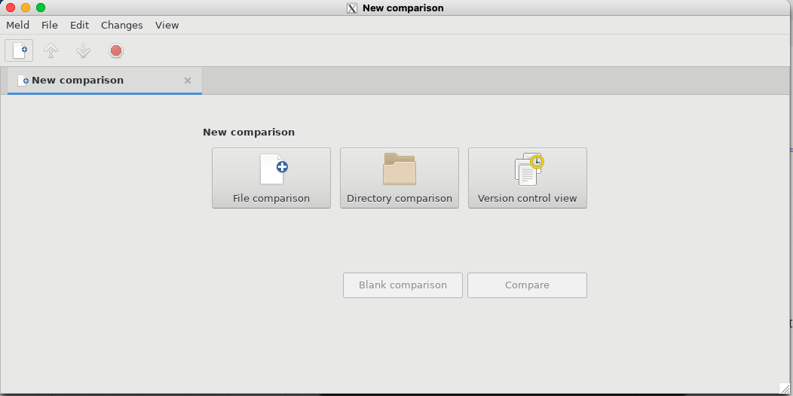

To enable GUIs on attu we'll use a X client that allows to redirect the GUIs from attu to our computer.
-XY flagd to enable trusted GUI redirection. For example:
ssh -XY -l your-netid attu.cs.washington.edumeld in the terminal. You should see this window appear:

libGL error: No matching fbConfigs or visuals found and libGL error: failed to load driver: swrast. This is normal.
If you have any questions or concerns, feel free to contact by email (tschweiz AT cs.washington.edu).